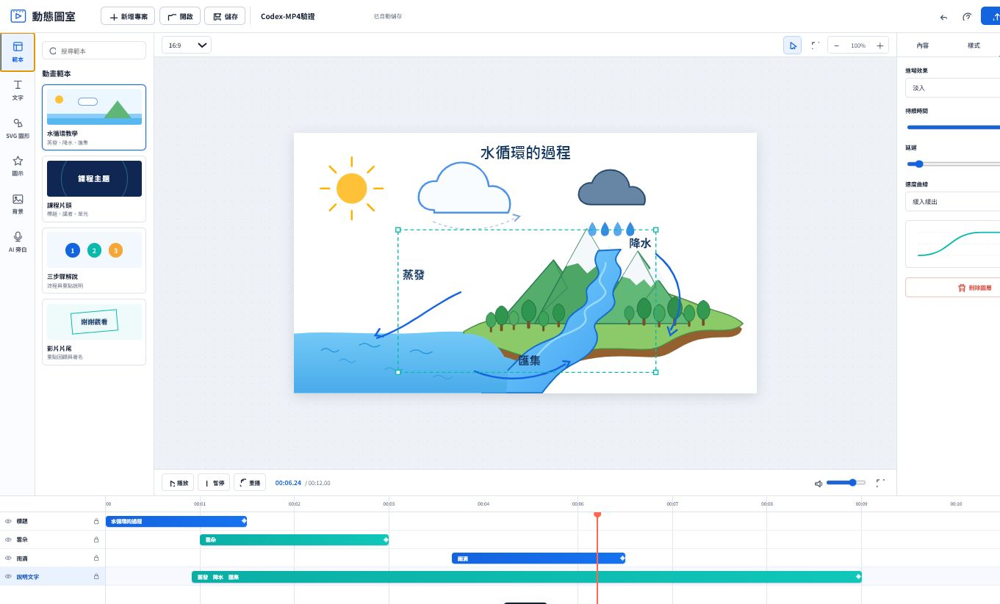

1. 安裝相依程式
需要 Node.js 18 以上、Python 3、edge-tts 與 ffmpeg。
python -m pip install edge-tts
ffmpeg -versionLOCAL FULL VERSION
保留完整 SVG 動畫編輯功能，並加入 Edge TTS 語音、MP3、SRT，以及以 ffmpeg 產生含旁白 MP4。

需要 Node.js 18 以上、Python 3、edge-tts 與 ffmpeg。
python -m pip install edge-tts
ffmpeg -versionclone 儲存庫後，在 PowerShell 切換到完整原始碼目錄。
cd .\my-blog\veo-crator\local-version\source
.\start-server.ps1接著開啟 http://127.0.0.1:8765/。